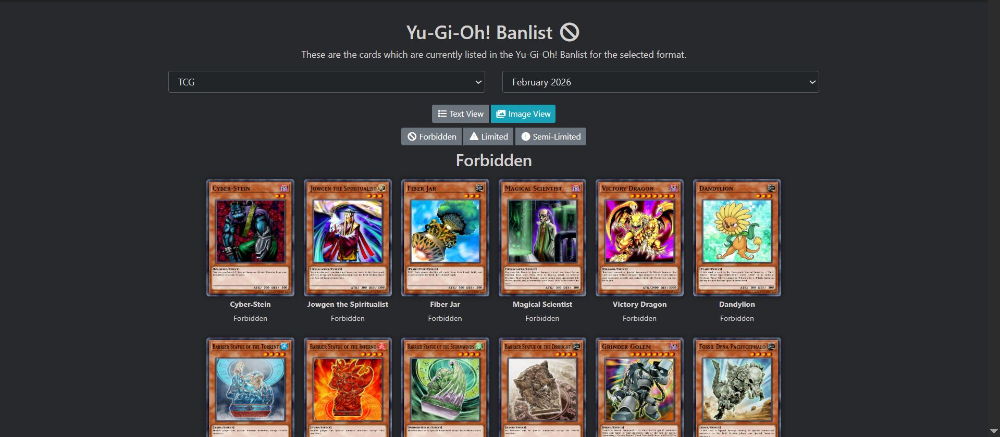
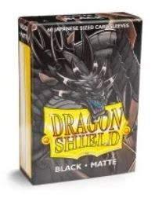

Welcome to the Intro to Yu-Gi-Oh where on this page I will go over the card game of Yu-Gi-Oh where I will go over basic rules of the game to get you started on your Yu-Gi-Oh journey where in addition I will provide images on what it may look like to perform these actions.
How to start

Source of image: Here
In order to start the game you first need a deck where the minimum amount of cards needed to have a legal deck is 40 cards and the max is 60 cards where these can be made up of monsters, spells and traps. Although you may build a deck on anything there are usual archetypes that they are better if they are built together. Additionally another thing you may want to keep in mind is the banlist which is a list of cards that have a limit on how many copies can be played of them where in general each card can be ran at 3 copies unless said otherwise.
Other Non-essentials of a Deck

Source of image: Here
To add to the basics of things you don't need but are recommended for your deck are deck sleeves that are for you to have some protections for your cards. Along side your sleeves I'd also recommend is a deckbox to hold your deck
Starting Rules
So before you start you must decide on who will go first where this can be decided anyway either through die roll or through a game of paper rock scissor
where winner would decide whether they go first or second. The difference between first and second is that first can't attack and second gets an extra draw.
The advantage of first is the set up that it grants as there is less interaction to worry about in first turn.
The main goal of the game is to win by get rid of your oponents life with each starting with 8000 and each drawing 5 for a starting hand. There are multiple phases
per turn. First is draw phase with whoever had the first turn doesn't draw, then is standby which some effects may be activated, then main phase where most things are performed here,
then battle phase which is when you can attack your opponent, then there is main phase 2 which allows someone to place cards face down, and lastly end phase which is the phase right before
you pass it to your opponent for their plays.
Actually Playing
Main Phase
When actually playing for each turn your are allowed 1 normal summon of a level 4 or lower monster where you can either have it in face up attack or face down defense. The level of a monster can be told by the stars on the card. Additionally during your turn you are allowed to play as many cards as possible as you have where the effects are applicable. For traps they must be set prior to be able to use them unless otherwise said. Additionally each monster may have an effect and as long as it is summoned or applicable you are freely able to use where the restriction comes in when you can activate it and how many times which should all be detailed in its card text.
Battle Phase
For each monster you have you are allowed one attack unless otherwise stated where you are able to attack your opponent directly to try to go for game with the protection your opponent can have is other monsters where they can block attacks as long as there are monsters where you can only attack directly when it is completely clear of their monsters. A monster can either be in attack or defense position with them having stats for both where if a monster can only attack when it is in attack position and when it is and another has greater attack the difference will be dealt as damage. When in defense and the attack of the other monster is greater than its defense then it is not trated as damage.
Main Phase 2
This phase is mostly used as any additional set up whether it be additional effects needed to be activated or any cards needed to be set.
End Phase
This phase not much is needed to be done as there will only be any effects that happen during this otherwise you will pass to your opponent.
Where to go from here
Now that you have learned the basics of Yu-Gi-Oh it is time to check the rest of this site:
- Deck Recommendations: Here on this part of the website will be different decks that I have used and tested where it will have information on them like a win to lose ratio and how much each of the card types is played
- Alternate Formats: On this part of the site if you think you have the hang of it you can go and look at different formats and try to see if there is any other way you'd like to learn to play